NCERT Solutions For Class 12 Chemistry Chapter 6 General Principles and Processes of Isolation of Elements
Topics and Subtopics in NCERT Solutions for Class 12 Chemistry Chapter 6 General Principles and Processes of Isolation of Elements:
| Section Name | Topic Name |
| 6 | General Principles and Processes of Isolation of Elements |
| 6.1 | Occurrence of Metals |
| 6.2 | Concentration of Ores |
| 6.3 | Extraction of Crude Metal from Concentrated Ore |
| 6.4 | Thermodynamic Principles of Metallurgy |
| 6.5 | Electrochemical Principles of Metallurgy |
| 6.6 | Oxidation Reduction |
| 6.7 | Refining |
| 6.8 | Uses of Aluminium, Copper, Zinc and Iron |
NCERT IN TEXT QUESTIONS
6.1. Which of the ores mentioned can be concentrated by magnetic separation method?
Ans: Ores Which are magnetic in nature can be separated from non-magnetic gangue particles by magnetic separation method. For ex: ores of iron such as haemetite (Fe2O3), magnetite (Fe3O4), siderite (FeCO3) and iron pyrites (FeS2 ) being magnetic can be separated from non-magnetic silica and other impurities by magnetic separation method.
6.2. What is the significance of leaching in the extraction of aluminium?
Ans: Leaching or chemical separation is quite effective to purify bauxite an ore of aluminium associated with the impurities of iron oxide. The ore is leached with concentrated solution of NaOH to form a soluble complex leaving behind the impurities.

6.3.

Ans: This is explained on the basis of Keq, the equilibrium constant. In the given redox reaction, all reactants and products are solids at room temperature, so, there is no equilibrium between the reactants and products and hence the reactions does not occur at RT. At high temperature, Cr melts and values of TAS increases. As a result, the value of

6.4. Is it true that under certain conditions, Mg can reduce Al203 and Al can reduce MgO? What are those conditions?
Ans:

NCERT EXRECISES
6.1. Copper can be extracted by hydrometallurgy but not zinc. Explain.
Ans:


But with water, these metals (Al, Mg, Ca and K) forms their corresponding ions with the evolution of H2 gas.
Thus, Al, Mg, Ca, K, etc., cannot be used to displace zinc from zinc solution, and only copper can be extracted by hydrometallurgy but not the zinc.
6.2.What is the role of depressant in froth-floatation process?
Ans: The role of depressant is to prevent one type of sulphide ore particles from forming the froth with air bubbles. NaCN is used as a depressant to separate lead sulphide (PbS) ore from zinc sulphide (ZnS) ore. NaCN forms a zinc complex, Na2[Zn(CN)4] on the surface of ZnS thereby preventing it from the formation of the froth.

In this condition, only lead sulphide forms froth and thus can be separated from zinc sulphide ore.
6.3. Why is the extraction of copper from pyrites more difficult than that from its oxide ore through reduction?
Ans:

6.4. Explain:
(i)Zone refining
(ii)Column chromatography.
Ans: (i) Zone refining: This method is used for production of semiconductors and other metals of very high purity, e.g., Ge, Si, B, Ca and In.
It is based on the principle that the impurities
are more soluble in the molten state (melt) than in the solid state of the metal.
The impure metal in the form of bar is heated at one end with a moving circular heater. As – the heater is slowly moved along the length of the rod, .the pure metal crystallises out of the melt whereas the impurities pass into the adjacent molten zone. Thi,s process is repeated several times till the impurities are completely driven to one end of the rod which is then cut off and discarded.
(ii) Chromatography: It is based on the principle that the different components of a mixture are adsorbed to different extents on an adsorbent.
In column chromatography, an adsorbent, such as alumina (Al2O3) or silica gel is packed in a column. This fonns the stationary phase. The mixture to be separated is dissolved in a suitable solvent (mobile phase) and applied to the top of the column. The adsorbed components are extracted (eluted) from the column with a suitable . solvent (eluent). The component which is more strongly adsorbed on the column takes longer time to travel through the column than a component which is weakly adsorbed. Thus, the various components of the mixture are seperated as they travel through absorbent (stationary phase).
6.5. Out of C and CO which is a better reducing agent at 673 K?
Ans: This can be explained thermodynamically, taking entropy and free energy changes into account.


As can be seen from ΔG° Vs T plot (Ellingham diagram), lines for the reactions, C ——–> C02 and C ——–> CO cross at 983 K. Below 983 K, the reaction (a) is energetically more favourable but above 673 K, reaction (b) is favourable and preferred. Thus, below 673 K both C and CO can act as a reducing agent but since CO can be more easily oxidised to C02 than C to C02 , therefore, below 673 K, CO is more effective reducing agent than carbon.
6.6. Name the common elements present in anode mud in the electro-refining of copper. Why are they so present?
Ans: Anode mud contains metals like Ag, Au, Pt etc. which are less reactive than Cu. Actually, they are not in a position
to lose electrons though they constitute the electrode which acts as anode. All these metals are left as residue under anode (known as anode mud) while the entire copper present participates in the oxidation half reaction.
Cu(s) → Cu2+(aq) + 2e–
6.7. Write down the reactions taking place in different zones in the blast furnace during the extraction of iron.
Ans: In the blast furnace reduction of iron oxides take place at different temperature ranges as shown below.
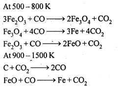

6.8. Write chemical reactions taking place in the extraction of zinc from zinc blende.
Ans: The following processes are involved in the extraction of zinc from zinc blende:
(i) Concentration: Zinc blende ore is crushed and the concentration done by froth- floatation process.
(ii) Roasting: The concentrated ore is then roasted in presence of excess of air at about 1200 K as a result zinc oxide is formed.
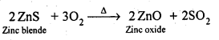
(iii) Reduction : Zinc oxide obtained above is mixed with powdered coke and heated to 1673 K in a fire clay retort where it is reduced ‘ to zinc metal.
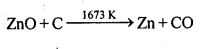
At 1673 K, zinc metal being volatile (boiling point 1180 K), distills over and is condensed.
(iv) Electrolytic refining: Impure zinc is made the anode while pure zinc strip is made the cathode. ZnSO4 solution acidified with dil. H2SO4 is the electrolyte used. On passing electric current, pure zinc gets deposited on the cathode.
6.9. State the role of silica in the metallurgy of copper.
Ans: Silica (SiO2) acts as an acidic flux in the metallurgy of copper and combines with FeO (the main impurity) to form FeSiO3 which is a slag.
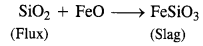
6.10. What is meant by the term “chromatography”?
Ans: Chromatography is a technique used for separation, purification, identification and characterization of the components of a mixture whether coloured or colourless. The term chromatography was originally derived from the Greek word ‘chroma’ meaning colour and ‘graphy for writing because the method was first used for the separation of coloured substances (plant pigments) into individual components.
6.11. What criterion is followed for the selection of the stationary phase in chromatography?
Ans: In chromatography, particularly in adsorption chromatography, the stationary phase is the adsorbent. It should fulfil certain criteria for better results.
(i) It should have high but selective adsorption power.
(ii) The particles should be spherical in shape and of uniform size.
(iii) The adsorbent should not react chemically with the solvents used for elution or with the components of the mixture under investigation.
(iv) The adsorbent should contain as small amount of the soluble components as possible.
(v) The adsorbent should be catalytically inactive and must have a neutral surface.
(vi) The adsorbent should be easily available.
(vi) The adsorbent should be perfectly white.
6.12. Describe a method for refining nickel.
Ans: When impure nickel is heated in presence of CO at 330-350 K, it forms volatile nickel tetracarbonyl leaving behind the impurities. The nickel tetracarbonyl thus obtained is then heated to higher temperature (450-470K), then it undergoes thermal decomposition to give pure nickel.

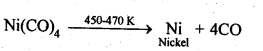
6.13. How can you separate alumina from silica in a bauxite ore associated with silica? Give equations, if any.
Ans: Pure alumina can be separated from silica in bauxite by Baeyer’s process. The bauxite ore associated with silica is heated with a concentrated solution of NaOH at 473-523 K and 35-36 bar pressure. Under these conditions, alumina dissolves as sodium meta-aluminate and silica as sodium silicate leaving behind the impurities.

The resulting solution is filtered to remove the undissolved impurities, sodium meta-aluminate can be precipitated as hydrated aluminium oxide by passing CO2 vapours. The sodium silicate formed cannot be precipitated and can be filtered off.

6.14. Giving examples, differentiate between ‘roasting’ and ‘calcination’.
Ans: Calcination is a process of converting carbonates and hydroxide ores of metals to their respective oxides by heating them, strongly below their melting points either in absence or limited supply of air.
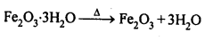

Roasting is a process of converting sulphide ores into its metallic oxides by heating strongly below its melting point in excess of air.
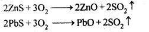
6.15. How is ‘cast-iron’ different from ‘pig iron’?
Ans: Cast iron differs from pig iron with respect to the carbon contents. Whereas carbon contents in pig iron are nearly four percent (4%), cast iron contains carbon to the extent of nearly three percent (3%).
6.16. Differentiate between “minerals” and “ores’.
Ans: Minerals: The natural substances in which the metals or their compounds occur in the earth is called minerais.
Ores: The minerals from which the metals can be coaveniently and economically extracted are called ores.
Note : All ores are minerals but all minerals are not ores.
6.17. Why copper matte is put in silica lined converter?
Ans: Copper matte consists of Cu2S along with some unchanged FeS. When a blast of hot air is passed through molten matte placed in silica lined converter, FeS present in matte is oxidised to FeO which combines with silica (SiO2) to form FeSiO3slag.
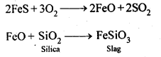2S undergoes oxidation to form Cu20 which then reacts with more Cu2S to form copper metal.
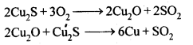
Thus, copper matte is heated in silica lined converter to remove FeS present in matte as FeSiO3 slag.
6.18. What is the role of cryolite in the metallurgy of aluminium?
Ans: (a) It lowers the fusion (melting) point of the bath from 2323 K to about 1140 K.
(b) It makes alumina a good conductor of electricity.
6.19. How is leaching carried out in case of low grade copper ores?
Ans: Leaching in case of low grade copper ores is carried out with acids in presence of air. In this process, copper is oxidised to Cu2+ ions which pass into the solution.

6.20. Why is zinc not extracted from zinc oxide through reduction using CO?
Ans: The chemical reaction involving the reduction of ZnO by CO is :
ZnO(s) + CO(g) → Zn(s) + CO2(g)
The process is thermodynamically not feasible because there is hardly any change in entropy as a result of the reaction. This is quite evident from the physical states of the reactants and products involved in the reaction
6.21. The value of ΔfG° for formation of Cr2O3 is – 540 kJ mol-1 and that of Al203 is – 827 kJ mol-1 . Is the reduction of Cr2O3 possible with Al?
Ans: Chemical equation for the formation of Cr2O3 and Al203 are as follows :


6.22. Out of C and CO, which is a better reducing agent for ZnO?
Ans: The two reduction reactions are :

In the first case, there is increase in the magnitude of ΔS° while in the second case, it almost remains the same. In other words ΔG° will have more negative value in the first case when C(s) is used as the reducing agent than in the second case when CO(g) acts as the reducing agent. Therefore, C(s) is a better reducing agent.
6.23. The choice of a reducing agent in a particular case depends on thermodynamic factor. How far do you agree with this statement? Support your opinion with two examples.
Ans: We can study the choice of a reducing agent in a particular case using Ellingham diagram.
It is evident from the diagram that metals for which the standard free energy of formation oftheir oxides is more negative can reduce those metal oxides for which the standard free energy of formation of their respective oxides is less negative. It means that any metal will reduce the oxides of other metals which lie above it in the Ellingham diagram. This is because the standard free energy change (ΔrG°) of the combined redox reaction will be negative by an amount equal to the difference in Δf G° of the two metal oxides. Thus both Al and Zn can reduce FeO to Fe but Fe cannot reduce Al203 to A1 and ZnO to Zn. In the same way, G can reduce ZnO to Zn but not CO.
Note : Only that reagent will be preferred as reducing agent which will lead to decrease in free energy value (ΔG°) at a certain specific temperature.
6.24. Name the processes from which chlorine is obtained as a by-product What will happen if an aqueous solution of NaCl is subjected to electrolysis?
Ans: Down process is used for the preparation of sodium metal, where chlorine is obtained as a by- product. This -process involves the electrolysis of a fused mixture of NaCl and CaCl2 at 873 K.Sodium is discharged at the cathode while Cl2 is obtained at the anode as a by-product.
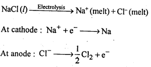
If, an aqueous solution of NaCl is electrolysed, H2 is evolved at the cathode while Cl2 is obtained at the anode.
6.25. What is the role of graphite rod in the electrometallurgy of aluminium?
Ans: In the electrometallurgy of aluminium, oxygen gas is evolved at anode. O2 reacts with graphite or carbon (graphite electrodes) to form carbon monoxide and carbon dioxide. In case if some other metal electrodes is used as anode, then oxygen will react with aluminium formed during the process to form aluminium oxide(Al2O3) which will pass into the reaction mixture resulting into wastage of Al. Since graphite is cheaper than aluminium, its wastage or can be tolerated.
6.26. Outline the principles of refining of metals by the following methods:
(i)Zone refining
(ii)Electrolytic refining
(iii)Vapour phase refining
Ans: (i) Zone refining: This method is used for production of semiconductors and other metals of very high purity, e.g., Ge, Si, B, Ca and In.
It is, based on the principle that the impurities are more soluble in the molten state (melt) than in the solid state of the metal.
The impure metal in the form of bar is heated at one end with a moving circular heater. As the heater is slowly moved along the length of the rod, the pure metal crystallises out of the melt whereas the impurities pass into the adjacent molten zone. This process is repeated several times till the impurities are completely driven to one end of the rod which is then cut off and discarded.
(ii)Electrolytic refining: Many metals, such as Cu, Ag, Au, Al, Pb, etc., are purified by this method. The impure metals is made the anode while a thin sheet of pure metal acts as a cathode. The electrolytic solution consists of a salt or a complex salt solution of the metal. On passing the current, the pure metal is deposited on the cathode while the impurities fall down as anode mud.
(iii)Vapour-phase refining: The crude metal is freed from impurities by first converting it into a suitable volatile compound by heating it with a specific reagent at a lower temperature and then decomposing the volatile compound at some higher temperature to give the pure metal.
(a)Mond’s process: When impure nickel is heated is a current of CO at 330-350 K, it forms volatile nickel tetracarbonyl complex leaving behind the impurities. The complex then heated to a higher temperature (450-470K) when it undergoes thermal decomposition giving pure nickel.
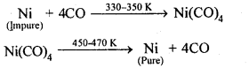
(b)Van Arkel method: This method is Used for preparing ultra-pure metals by removing all the oxygen and nitrogen present as impurities in metals like zirconium and titanium (which are used in space technology).Crude Zr is heated in an evacuated vessel with iodine at 870 K. Zirconium tetraiodide thus formed is separated. It is then decomposed by heating over a tungsten filament at 1800 – 2075 K to give pure Zr.
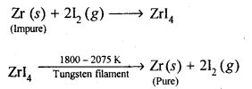
6.27. Predict conditions under which Al might be expected to reduce MgO.
Ans: The equations for the formation of the two oxides are
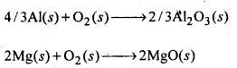
If we look at the plots for the formation of the two oxides of the Ellingham diagram, we find that they intersect at certain point. The corresponding value of ΔG° becomes zero for the reduction of MgO by Al metal.

This means that the reduction of MgO by Al metal can occur below this temperature. Aluminium (Al) metal can reduce MgO to Mg above this temperature because Δ°G for Al2O3 is less as compared to that of MgO.

More Resources for CBSE Class 12: